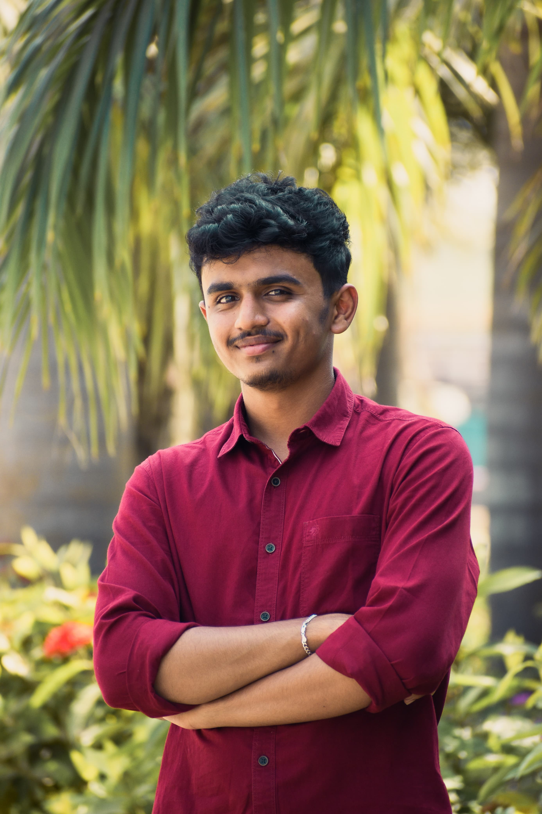

Hey!! I am Sabbani Sathwik from India, Telangana

In web design, the focus lies on crafting the aesthetic appeal and structuring of a website's interface. This entails conceptualizing and arranging visual components to optimize user experience and engagement. Conversely, coding entails the transformation of these designs into dynamic and interactive web environments through the implementation of programming languages such as HTML, CSS, and JavaScript.
My expertise in Python spans web development, data analysis, automation, and AI. Proficient in frameworks like Django and Flask, I craft scalable web solutions effortlessly. Leveraging libraries such as Pandas and NumPy, I delve into data analysis with finesse. Clean, maintainable code is my hallmark, ensuring projects are future-proof. Python's simplicity, versatility, and vast ecosystem make it my go-to language for diverse challenges.
My proficiency in SQL enables me to effectively manage and analyze complex datasets. From crafting intricate queries to optimizing database performance, I ensure data integrity and efficiency. Whether it's designing relational databases or conducting advanced analytics, SQL serves as my primary tool for extracting insights and driving informed decision-making.
With a solid grasp of C++, I excel in developing high-performance applications and systems. From implementing algorithms to building efficient data structures, I leverage C++'s power to create robust solutions. My expertise extends to game development, embedded systems, and performance-critical applications, where C++ shines as a versatile and performant language.
As a seasoned web developer, I bring a wealth of experience and expertise to the table. With a passion for crafting innovative digital solutions, I am proud to serve as a web developer for LSS (Leading Social Society). My dedication to delivering high-quality, user-centric websites and applications is unwavering.
With every project, I strive to push the boundaries of creativity and functionality, ensuring that LSS remains at the forefront of the digital landscape. Together, we are shaping the future of online engagement and community-building, one pixel at a time.
contact usAs the Core Video Editor and Photographer at Unibeats, I am entrusted with the responsibility of capturing the essence of our platform through captivating visuals. Armed with advanced editing tools and a keen eye for detail, I meticulously craft each image and video to convey the unique stories and experiences within the university community. From lively campus events to intimate student interviews, I strive to encapsulate the vibrancy and diversity of Unibeats' content. Through seamless editing techniques and creative storytelling, I aim to engage and inspire our audience, fostering a deeper connection with our platform. My dedication to excellence and passion for visual storytelling drive me to consistently deliver high-quality content that showcases the best of what Unibeats has to offer. contact us

As the Video Editor and Photographer at SRM Andhra Pradesh University, I am tasked with capturing the essence of campus life through my lens. Armed with state-of-the-art equipment and creative vision, I meticulously document events, academic activities, and student experiences. From bustling lectures to serene campus landscapes, every shot is carefully crafted to reflect the vibrant spirit of our university. Through precise editing techniques and artistic flair, I transform raw footage into compelling visual narratives that resonate with our diverse audience. My goal is to showcase the dynamic energy and accomplishments of SRM Andhra Pradesh University, fostering a sense of pride and connection among students, faculty, and alumni. With dedication and passion, I am committed to elevating the university's brand through my role as a Video Editor and Photographer.
follow us
Github Instagram facebook linkedin| all rights reserved